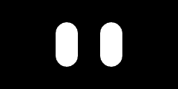
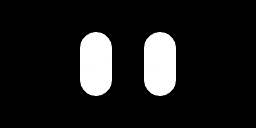

Small tools built to fix real annoyances, a homebrew robotics side-build, and a few places I've shown up on stage or in print.
Tools
I built this to stop reading the same funding announcement in five different newsletters. Every morning it scans VC and startup-finance newsletters in my inbox, pulls out every funding round, acquisition, IPO, and leadership move it can find, and drops them — deduplicated and organized — into the live dashboard below. No manual copy-paste, no missed deals, no cost to run.
1,000+ deals logged since April 2026, still running on the free tier.
Get the daily digest on TelegramA drag-and-drop macOS/Windows app that turns a saved Quizlet flashcard page into a clean term/definition CSV — no scraping, no server, nothing leaves your machine. The point isn't the CSV itself; it's getting flashcards into a format an AI can actually study with: fact-checking cards, generating practice exams, and sequencing a study plan.
Built for non-technical classmates in humanities/bio/pre-med tracks, with a README written for people who've never opened a terminal.
Hardware side-build
A living-room hackathon with my roommate Aman Sharma (Texas A&M Cyclotron Institute): an ESP32 wired to a microphone and environmental sensors, driving an LCD "face" that changes expression with ambient conditions — a nod to dConstruct's dASH-er robot. Aman wrote the sensor firmware on the EPICS framework (the same control-systems toolkit CERN uses); I used Claude to configure the LCD module and get the expressions talking to the sensor data, learning ESPHome and YAML/C++ along the way. Below are a few of the faces it makes.


Featured in
Panelist, hosted by MUNers Across Borders.
via LinkedIn →Guest speaker representing MUN Impact, presenting on the org's work democratizing the Model UN experience.
via LinkedIn →Open-forum panelist alongside Jaideep Singh Soodan, Mohammed Mostafa, and Defne Yaman.
via LinkedIn →